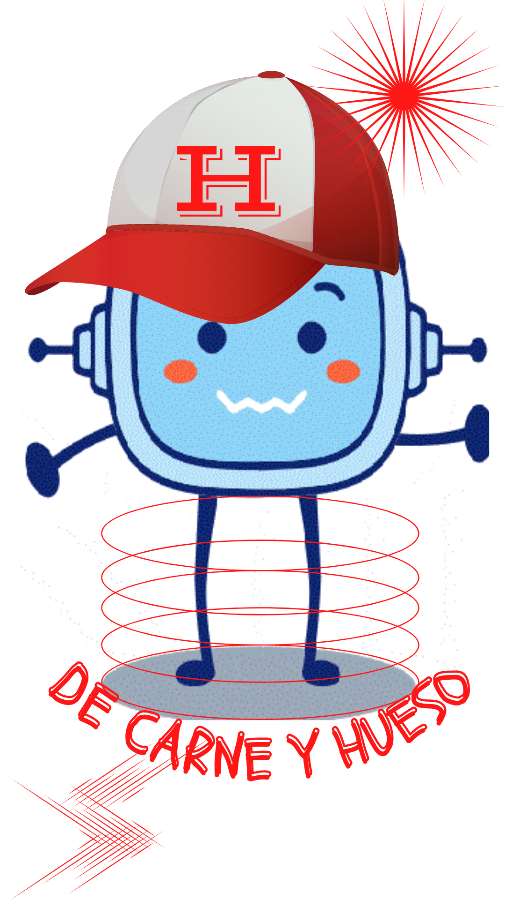
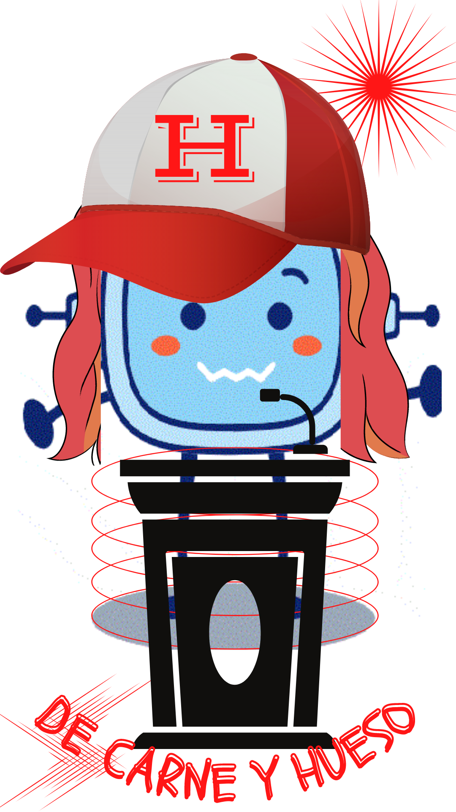

Capacidad de identificarse con alguien y compartir sus sentimientos.
Ejemplo
Siento mucha empatía hacía la chica nueva que ha llegado al instituto.
Esbozo
Definición
Exposición de una idea o plan en sus líneas generales.
Ejemplo
He hecho un esbozo de mi primera novela.
Viables
Definición
Que tiene probabilidades de poderse llevar a cabo.
Ejemplo
Recaudar dinero para el comedor social del barrio es una acción viable.
¡Fantástico! Ya te has dado cuenta de que tú también puedes ser un héroe de carne y hueso.
Te has estado entrenando para frenar las injusticias y hacer del mundo un lugar mejor.
¿Cómo?
Aprendiendo cómo defender una idea que mejore el mundo a través de los valores del Reino de Dios.
Falta el último paso, producir tu discurso para cambiar el mundo, para movilizar a muchos héroes sin capa ni poderes sobrenaturales.
Sin embargo, no debes tener prisa, convencer a los indiferentes y agrupar a gente que luche contigo no es labor fácil.
Te propongo que elabores ahora un esbozo de tu mitin, a partir del guion que has ido creando en la primera etapa, para luego perfeccionarlo en la tercera etapa.
Como puedes comprobar ahora estamos en la segunda etapa.
Mejorar el mundo está en tus manos. ¡Lo conseguirás!
Definición
Exposición de una idea o plan en sus líneas generales.
Ejemplo
He hecho un esbozo de mi primera novela.
Lectura facilitada
!Fantástico!
Sabes que puedes ser un héroe de carne y hueso.
Has entrenado para frenar el caos de Narcisa Vulcan.
¿Cómo lo has hecho?
Sabes defender una idea que mejore el mundo.
Defiendes esa idea con textos argumentativos y sus partes.
Defiendes esa idea con el verbo y los grupos verbales.
Defiendes esa idea con poemas épicos.
Los poemas épicos son la Iliada y la Odisea.
Defiendes esa idea con la figura del héroe.
Ahora falta un último paso.
Este paso es hacer tu discurso para cambiar el mundo.
No tengas prisa para convencer a Poncia The Quiet.
Elabora un borradorde tu mitín.
Utiliza el guión que hiciste en la primera etapa.
En la tercera etapa lo vas a hacer perfecto.
Ahora te encuentras en la segunda etapa.
Mejorar el mundo está en tus manos.
¡Lo conseguirás!
1. Segunda etapa: escribo mi mitin
Primer borrador
Previamente has trabajado en un guión (primera etapa) para tu discurso o mitin aplicando todo aquello que has aprendido en este REA. Es así que has fijado la problemática que te preocupa y soluciones viables.
Transversalmente has trabajado la empatía y la responsabilidad social y ecológica analizando los problemas que afectan al mundo. Tu reto consiste, siguiendo los modelos que se te han dado, en construir un texto argumentativo bajo la forma de mitin para convencer a la gente que te ayude a enfrentar alguno de los problemas del mundo cambiando cosas a pequeña escala.
Por lo tanto vamos a comenzar dando forma a tu guion.
En primer lugar, realizarás un borrador organizando todos los datos en párrafos. No te olvides que debes dejar clara la idea o tesis principal y para ello puedes hacerlo en el primer párrafo. A continuación insertarás los argumentos organizados de forma clara y cohesionada. Finalmente, pondrás una conclusión que cierre el texto motivando aún más a los que no quieren comprometerse.
Esto es solo un borrador por lo que no pasa nada si no está perfecto. Volverás nuevamente sobre él.
Revisión
Por parejas se revisarán los borradores para tener una visión más amplia. Cada uno leerá en voz alta su borrador y el compañero o compañera puede sugerir mejoras o hacer alusión a lo que no le queda claro o no le gusta del todo.
Las sugerencias pueden tenerse en cuenta o no para la mejora del borrador.
Definición
Que tiene probabilidades de poderse llevar a cabo.
Ejemplo
Recaudar dinero para el comedor social del barrio es una acción viable.
Definición
Capacidad de identificarse con alguien y compartir sus sentimientos.
Ejemplo
Siento mucha empatía hacía la chica nueva que ha llegado al instituto.
Lectura facilitada
Primer borrador
En las páginas anteriores has hecho un guion de tu discurso.
Has hablado del problema que te preocupa.
Has dado soluciones fáciles.
Has hecho un texto argumentativo con una idea y con argumentos.
Has trabajado el verbo y el sintagma verbal.
Conoces la figura del héroe con los poemas épicos de la Iliada y la Odisea.
El compañero o compañera da su opinión para mejorar el borrador.
Estas opiniones se pueden tener en cuenta o no.
Definición
Ponerse en lugar de otro.
Ejemplo
Siento mucha empatía por una alumna de 2º de E.S.O.
Definición
Trozos de un escrito.
Ejemplo
Esta página del libro tiene tres párrafos.
Finalmente, para fortalecer tus capacidades como héroe y heroína de carne y hueso, aquí tienes algunas estrategias argumentativas que puedes usar en tu mitin.
¡Comenzamos! Así ponemos en práctica "Venga a nosotros tu reino"
Lectura facilitada
Aquí tienes algunos trucos que puedes usar en tu mitin.
Estos trucos fortalecen tus capacidades de héroe o heroína.
¡Comienza!
Así bloqueas a Narcisa Vulcana
Así convences a Poncia The Quiet.

Te toca ahora subirte al escenario y defender tus ideas para cambiar el mundo.
Crearás tu discurso bajo el formato de mitin y lo darás a conocer en tu entorno pero también en las redes.
Lo primero que harás, por supuesto, es trabajar tu discurso en el formato que elijas o conjugando todos ellos si te atreves.
Eres un héroe y heroína de carne y hueso.
Lo harás de maravilla con el superpoder de la empatía y el compromiso.
Lectura facilitada
Sube al escenario
Defiende tus ideas para cambiar el mundo.
Crea tu discurso.
Da a conocer tu discurso o mitin en redes sociales.
Lo primero es elegir el formato en el que harás tú mitin.
1. Lo tuyo son las cámaras, graba un vídeo con tu mitin
Si lo tuyo son las cámaras ¡adelante!. Está claro que es una de las armas más poderosas para derrotar la indiferencia y sobre todo para convencer a los indecisos para que te ayuden a cambiar el mundo. Vas a grabar un vídeo con tu mitin. Puedes hacerlo con tus compañeros y compañeras como público, con tu familia y amigos. Tal vez nos sorprendas con tus habilidades añadiendo efectos especiales y un montaje espectacular. Todo se admite si eres un valiente que quiere cambiar el mundo.
Si tienes algunas dudas sobre la edición de vídeos, aquí puedes acceder a este sencillo tutorial:
 Definición
Definición